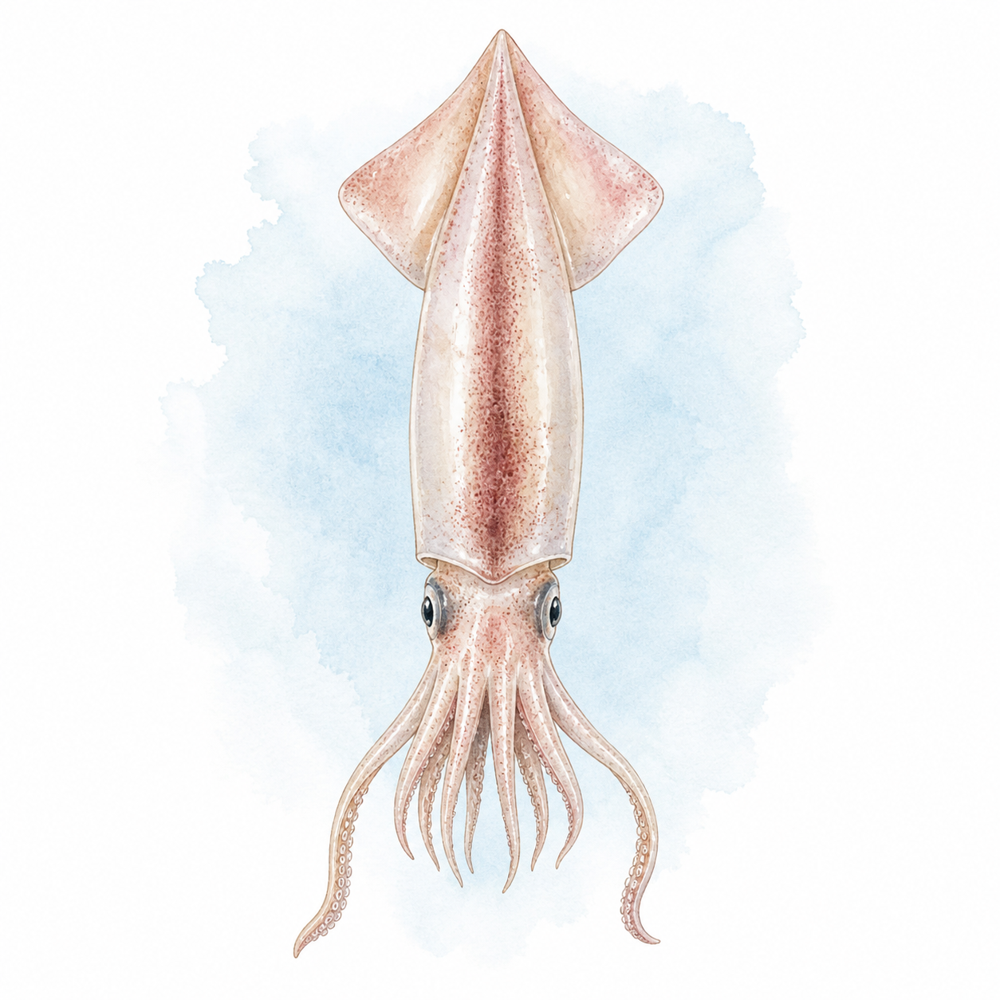

ヤリイカ
ヤリイカ
過去1年 954件
本日の釣果報告は集計待ち
トップ › ヤリイカ
神奈川・東京・千葉・茨城・静岡の5県の船宿を横断集計しています。
★ 今週実績あり（3魚種）
主戦場は城ヶ島沖（460便）で、長井勢が便数の中心。小田原早川・松輪間口（夜便あり）・勝浦川津と続き、剣崎沖・洲の崎沖も実績ポイント。攻める水深は110〜170mの本格深場だ。
| 1月 | 2月 | 3月 | 4月 | 5月 | 6月 | 7月 | 8月 | 9月 | 10月 | 11月 | 12月 | |
|---|---|---|---|---|---|---|---|---|---|---|---|---|
| 数釣 | ||||||||||||
| 型釣 |
※ 過去3年の関東船釣り釣果データより集計（2023年〜）
シーズンは秋に始まり春まで。当サイトの過去3年・2,809便の集計では10月に立ち上がり、2月（449便）・1月を含む12〜4月が本番。6〜8月はほぼ休漁だ。終盤の春は「パラソル級」と呼ばれる大型の比率が上がる。エリアの時間差も面白く、三浦（長井・松輪）は晩秋〜冬、勝浦は2〜3月が最盛と、東へ行くほどピークが遅れる。
船釣り全般の Q&A（服装・船酔い・予約・ライフジャケット等）はよくある質問ページにまとめています。
関東ヤリイカ船釣りの釣果は11〜4月に実績が集中しています。10月も狙える時期です。 → エリア別のシーズン傾向を見る
関東ヤリイカ船釣りの主なエリアは長井港（531便）、長井新宿港（278便）、小田原早川港（271便）です。
関東ヤリイカ船釣りの一日の釣果は9〜23匹が標準的なレンジです。中央値は15匹・上位10%の好日は34匹以上です。最高実績は147匹です（いずれも個人釣果ベース・船全体の合計数は除く）。
難易度は入門〜中級の釣りです。ブランコ仕掛けでの数釣りが楽しめます。冬〜春の風物詩で、繊細なアタリと食味の良さが魅力です。関東では81船宿が出船実績あり。多くの船宿でレンタルタックルや仕掛けの購入が可能です。 → 初心者向けガイドを見る
